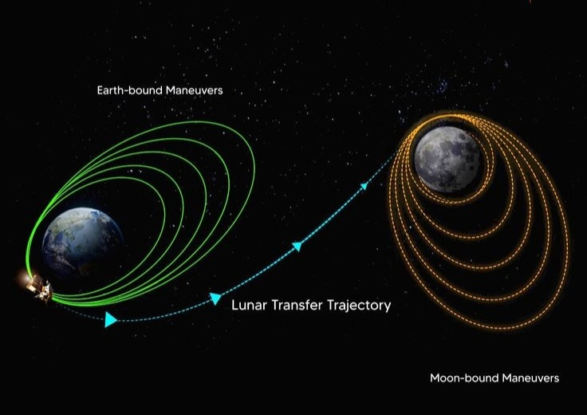

Orbiter
The orbiter will map the Moon's surface, study its composition, and monitor its environment The Chandrayaan-3 Orbiter It is designed to carry out a comprehensive range of scientific investigations, including:
=>Orbiter Specifications:
=>Instruments